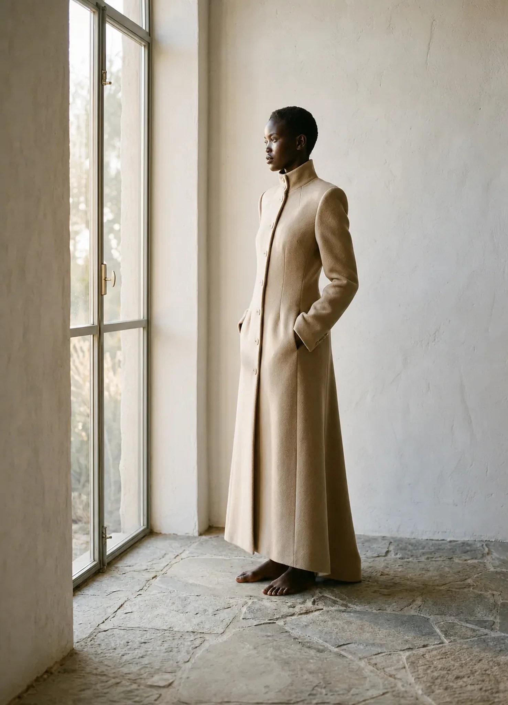
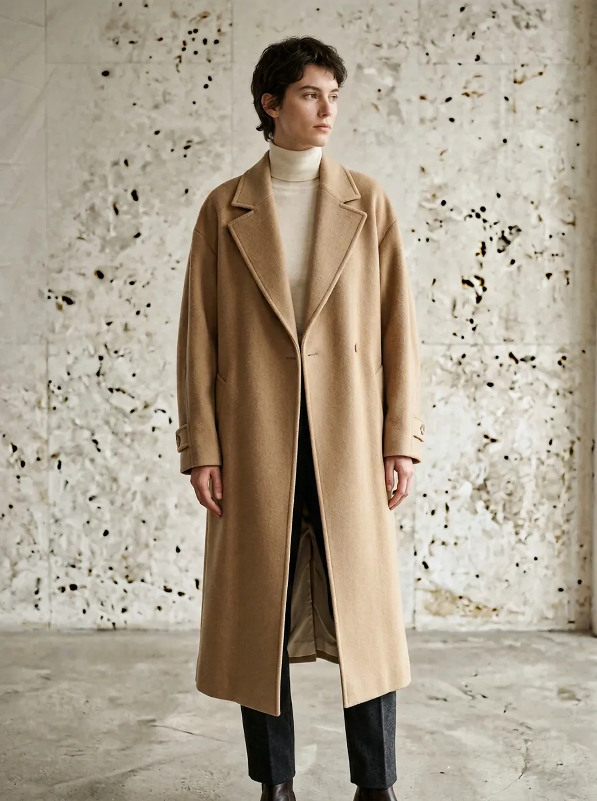
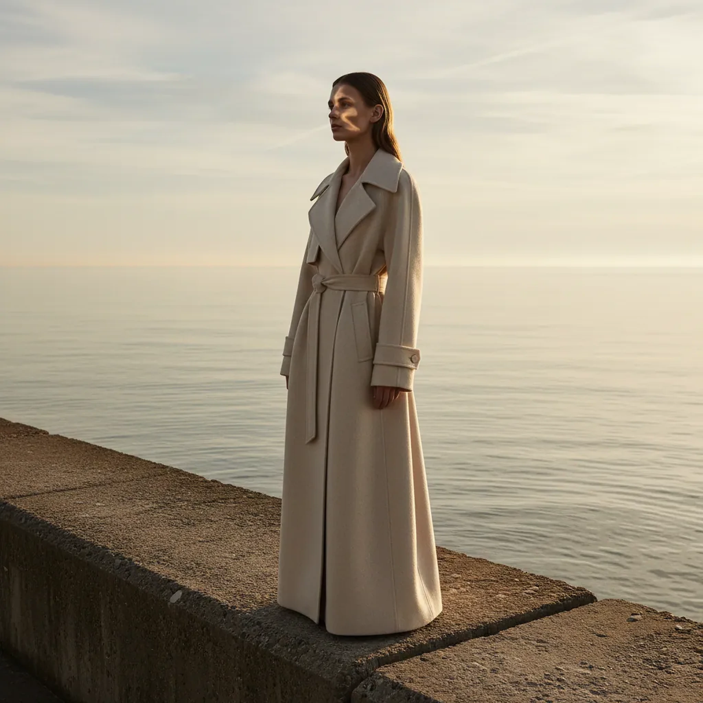
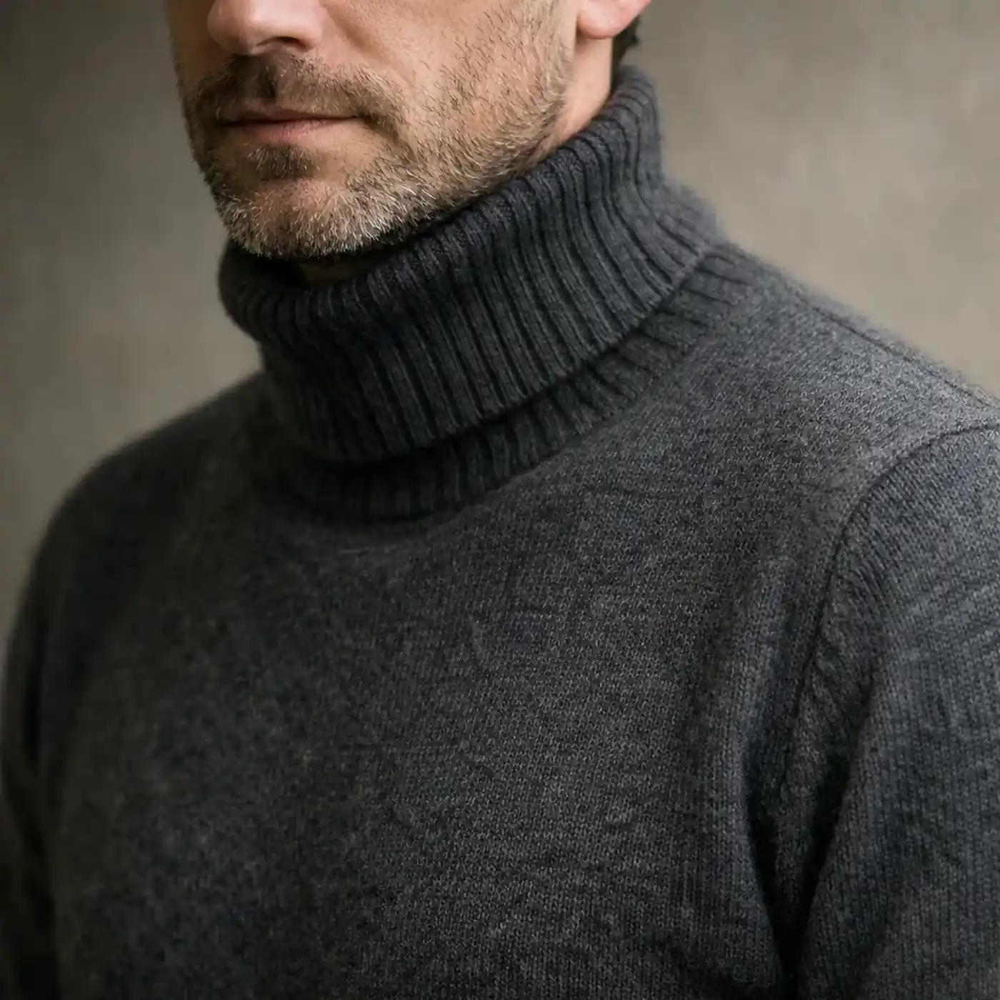
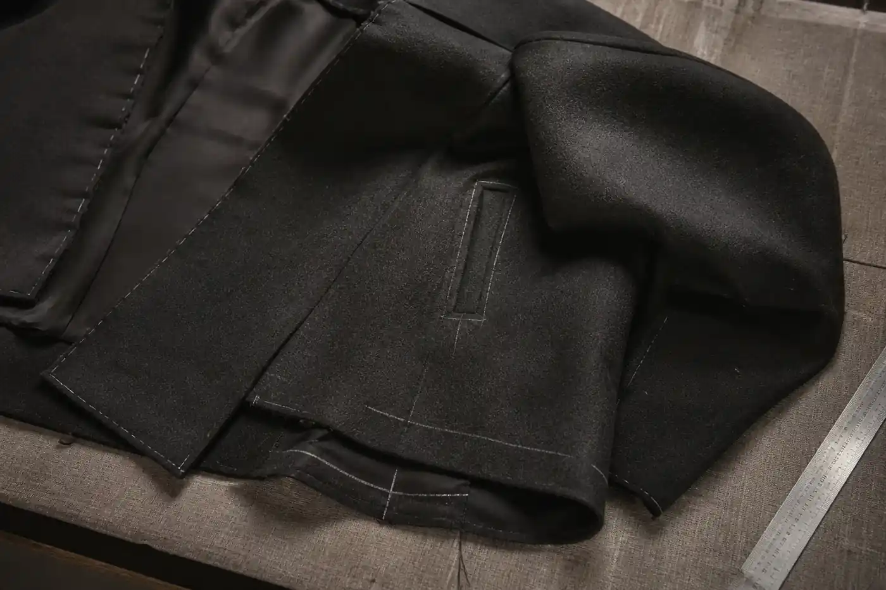
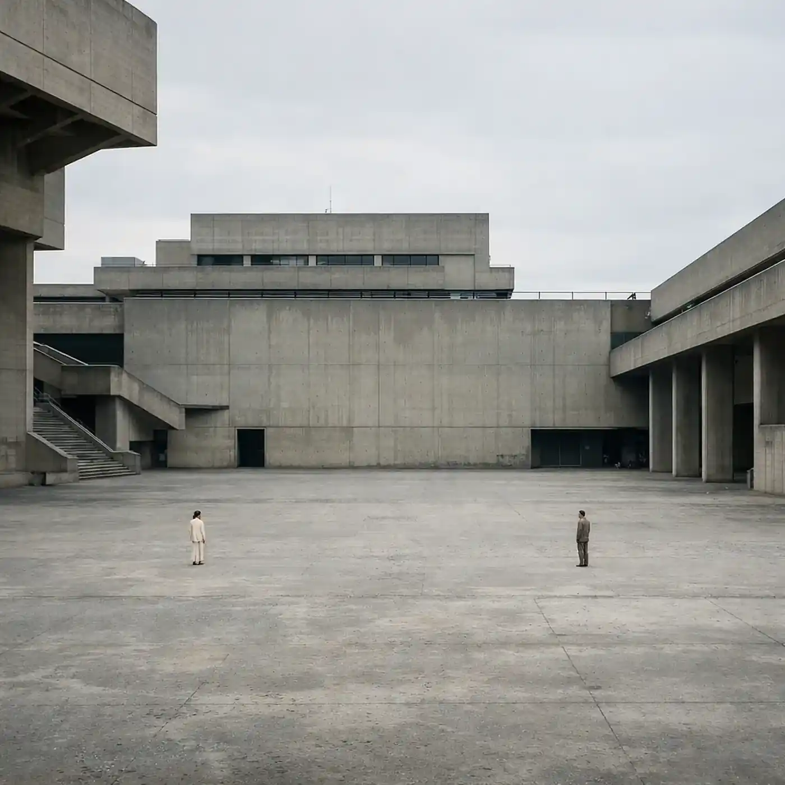
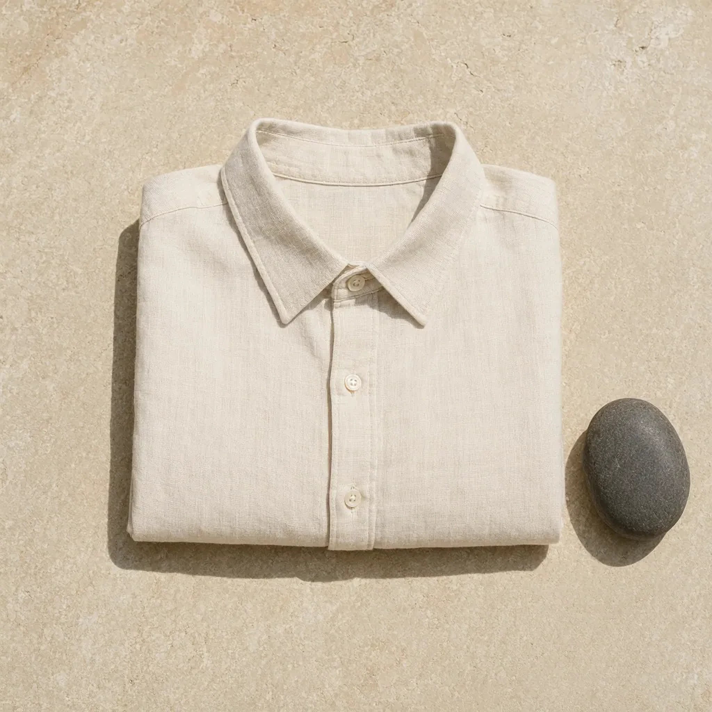
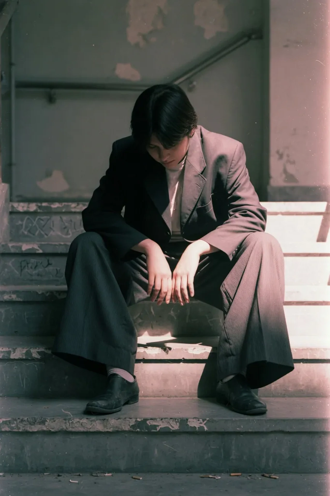
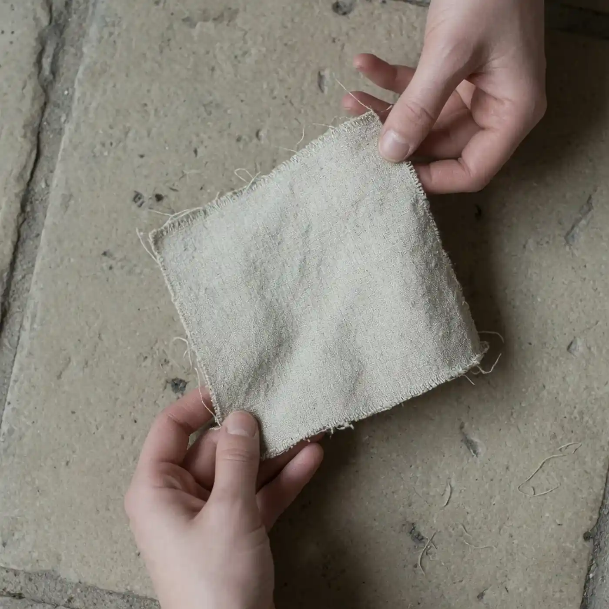

Zwarty splot, miękki pion, widoczna praca zagniecenia.

Forma bez granic.
Nie wybieraj płci. Wybierz proporcję, ciężar i przestrzeń wokół ciała.
Jeden element.
Pełna informacja.
Kolekcja jest fikcyjna. Wymiary, skład i ceny są demonstracyjne — interakcja pokazuje, jak sklep powinien pomagać wybrać, nie tylko wyglądać.

128 cm
68 cm
GARMENT 01 / 063 899 zł
Płaszcz Ciszy
Miękka bryła o obniżonej linii ramion. Ciężar tkaniny prowadzi pion, a szeroki rękaw zostawia miejsce na warstwę.
- Materiał*
- wełna 80% / len 20% · 420 g/m²
- Ruch
- długi krok · pełny rękaw · warstwa pod spodem
- Pielęgnacja*
- czyszczenie specjalistyczne · wietrzyć między użyciami
Ile ciszy ma zostać między tkaniną a ciałem?
Wybierz preferowany luz. To prosty demonstracyjny przewodnik, nie dobór rozmiaru bez rzeczywistych wymiarów produktu.
Rozmiar to kod. Proporcja jest decyzją.
Ta sama litera może opisywać zupełnie inną bryłę. Dlatego karta ubrania powinna pokazywać rzeczywisty obwód, długość, linię ramienia i przewidziany luz — osobno dla każdego rozmiaru.
PŁASZCZ / MRAMIĘ 54 CM*KLATKA 136 CM*DŁUGOŚĆ 128 CM*LUZ +18 CM**wartości demonstracyjne, nie tabela produkcyjna
Ubranie zaczyna się poruszać dopiero poza packshotem.
Obszerny rękaw, krok, siad i warstwa pod spodem są częścią fasonu. Sekwencja pokazuje zmianę bryły, nie obiecuje parametrów, których jeszcze nie przetestowano.


Materiał nie kończy się na nazwie włókna.
Skład jest dopiero początkiem. Przed sprzedażą potrzebne są masa, splot, chwyt, prześwit, podatność na zagniecenia i instrukcja pielęgnacji potwierdzona próbą.
Suchy chwyt, naturalny prześwit, szybka reakcja na ruch.
Płynna powierzchnia, miękki bok, ciężar skupiony przy dole.
BADANIE
ŚWIATŁA
ŚWIATŁA
Lazurowe Wybrzeże / fikcyjny editorial
Poranne światło · len · kamień

CONSTRUCTION STUDY / DEMOKonstrukcja ma wyjaśniać bryłę.
- Ramię
- Obniżone, bez deklarowania niewidocznego wkładu konstrukcyjnego.
- Zapięcie
- Przesunięte względem osi, aby objętość układała się asymetrycznie.
- Kieszeń
- Umieszczona w linii cięcia; pozycja wymaga pomiaru produkcyjnego.
- Dół
- Ciężar i podwinięcie powinny zostać pokazane na zbliżeniu produktu.
Jedna garderoba. Trzy temperatury.
Objętość zostaje przy łokciu i biodrze; koszula działa jako warstwa zewnętrzna.
Bliska baza zostawia miejsce na miękką konstrukcję ramienia.
Przed publikacją trzeba sprawdzić obwód pachy i rękawa dla pełnej warstwy.
Badanie światła, nie dekoracja kampanii.
Dziewięć kadrów sprawdza matowość, prześwit i zachowanie konturu w ostrym oraz rozproszonym świetle.




Pielęgnacja jest częścią projektu ubrania.
Symbol na metce nie wystarcza. Każdy materiał potrzebuje potwierdzonego scenariusza prania, suszenia, prasowania i przechowywania.
- Po noszeniuWietrzenie i kontrola zabrudzeń przed automatycznym praniem.
- PróbaTest temperatury, detergentu i zmiany wymiaru na materiale produkcyjnym.
- SuszeniePozycja dobrana do masy mokrej tkaniny i podatności na rozciąganie.
- NaprawaZapas nici, guzików i sposób dostępu do elementów konstrukcyjnych.
Co musi znaleźć się przy każdym rozmiarze.
AObwód ubrania, nie tylko zakres ciała
BDługość mierzona od konkretnego punktu
CWymiary osoby na zdjęciu i noszony rozmiar
DZakres ruchu sprawdzony w pozycji stojącej i siedzącej
ETolerancja produkcyjna i sposób pomiaru
Przed dodaniem do koszyka demo.
Odpowiedzi nie zastępują rzeczywistych tabel, stanów magazynowych ani polityki sklepu.
Czy kolekcja jest unisex?
To fikcyjna kolekcja organizowana według sylwetki, nie płci. Realny produkt nadal potrzebuje pełnej tabeli wymiarów i zdjęć na różnych osobach.
Czy skład materiału jest potwierdzony?
Nie. Składy i gramatury są autorską treścią demonstracyjną i muszą zostać zastąpione danymi dostawcy.
Czy mogę kupić ubranie?
Nie. Koszyk działa wyłącznie lokalnie jako demonstracja stanu interfejsu; checkout i rezerwacja są wyłączone.
Jak wybrać rozmiar?
Przewodnik pokazuje logikę preferowanego luzu. Bez rzeczywistych wymiarów ubrania nie daje wiarygodnej rekomendacji zakupowej.
Przed prawdziwym sklepem.
01 Rzeczywisty skład, pochodzenie i masa tkaniny
02 Wymiary ubrania w każdym rozmiarze
03 Wymiary modela i rozmiar na zdjęciu
04 Testowana pielęgnacja i trwałość
05 Stan magazynu, dostawa, zwroty i podatki
06 Checkout, regulamin i prywatność